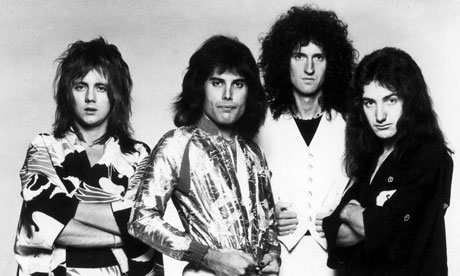

<h2>Queen</h2>
<p>Banda británica de rock formada en 1970 en Londres</p>
<br>

<h3>Discografía</h3>
<thead>Grandes éxitos de Queen</thead>
<!--table>tr*5-->
<table>
  <tr>
    <!--td*2-->
      <td>Año</td>
      <td>Disco</td>
  </tr>
  <tr>
    <td>1975</td>
    <td>A night at the opera</td>
  </tr>
  <tr>
    <td>1986</td>
    <td>A King of Magic</td>
  </tr>
  <tr>
    <td>1989</td>
    <td>The miracle</td>
  </tr>
  <tr>
    <td colspan="2">"A Kind of Magic fue el álbum más exitoso" </td>
  </tr>

</table>

<br><br>

<h3>Integrantes del grupo:</h3>

<!--ul>li*4-->
<ul>
  <li>Brian May</li>
  <li>Freddie Mercury</li>
  <li>John Deacon</li>
  <li>Roger Taylor</li>
</ul>

<br>

<h3>Sitio Web Oficial</h3>
<a href="https://www.queenonline.com">www.queenonline.com</a>


